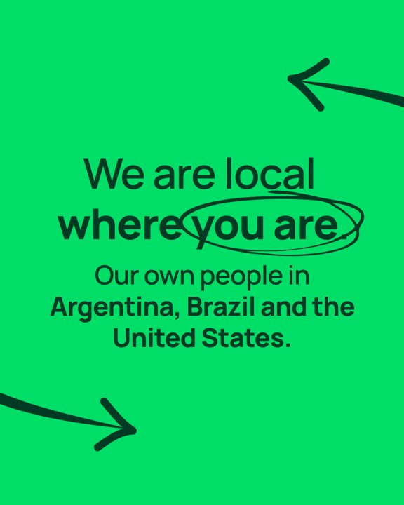
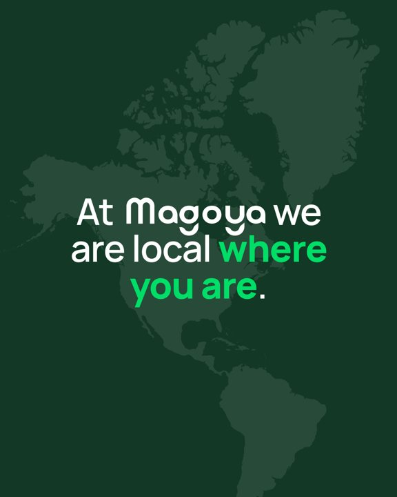
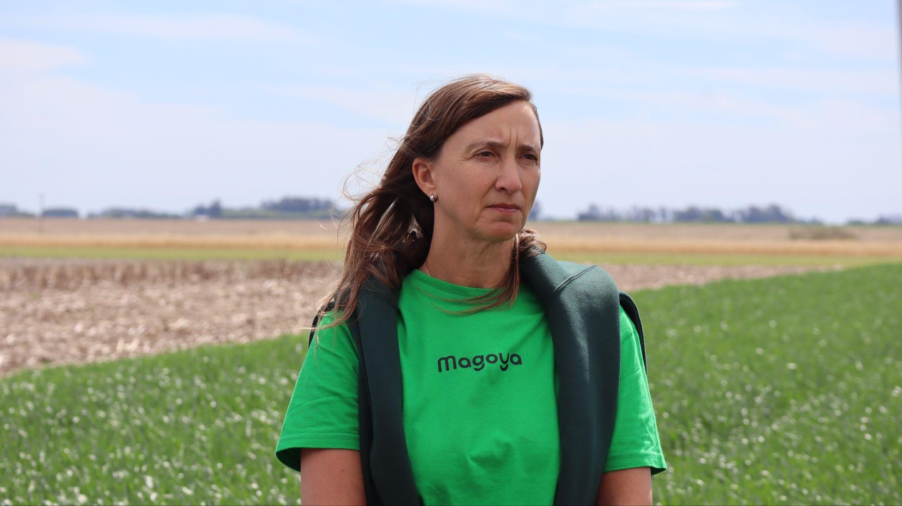
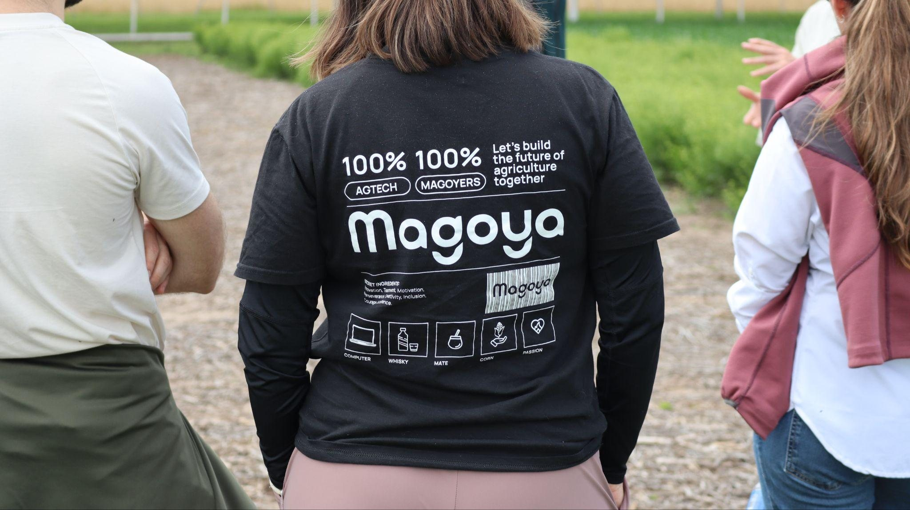
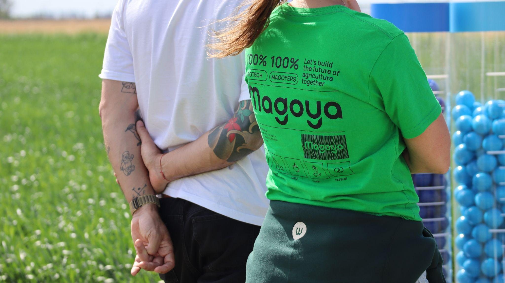

Logo & avatares
El wordmark redondeado es la firma. Los avatares — extraídos de las letras del wordmark — son el sistema de identidad secundario para redes, favicons y aplicaciones chicas.

Principal · verde digital #00DE68 sobre blanco

Institucional · crema sobre Verde Magoya #133825

Neutra · negro #161616 sobre blanco

Cálida · verde profundo sobre Crema #ECE3DB
Avatares
Siempre círculo verde digital #00DE68 con marca blanca. La cara es el avatar de personalidad (redes sociales, comunidad); la m es el monograma funcional (favicon, app icon). No inventar avatares nuevos ni cambiar los colores.
Reglas & especificaciones
- Aire mínimo alrededor del wordmark: la altura de la “m” en todos los lados.
- Tamaño mínimo: 90px de ancho en pantalla · 24mm en impreso. Menos que eso → usar el avatar “m”.
- Sobre foto: wordmark crema o blanco, siempre con overlay verde profundo.
- Colores permitidos del wordmark: verde digital, negro, crema, verde profundo, blanco.
- No estirar, rotar, inclinar, agregar sombras, contornos ni degradados.
- No usar el wordmark en lima #A2FF00 — el lima es energía, no identidad.
- No recolorear los avatares ni ponerlos sobre fondos que compitan (lima sobre verde digital, etc.).
- No reconstruir el wordmark con otra tipografía ni alterar el espaciado entre letras.
El negro construye.
El verde hace crecer.
Tres verdes con roles distintos y neutros cálidos. El Verde Magoya #133825 es el verde protagonista de Magoya. Para resaltar una frase en un titular sobre fondo oscuro se usa el Verde digital #00DE68. El lima #A2FF00 ahora también es uno de los colores de IA en Campo, así que en Magoya ocupa poca superficie: solo acentos, detalles o CTA. Nunca una pieza 100% negra ni 100% verde.
Proporción de uso
Es el verde protagonista de Magoya: se potencia su uso y ocupa la mayor superficie.
Mucha menos proporción: solo acentos, detalles o CTA.
El ancho de cada bloque muestra la relación entre los dos colores, no un porcentaje. Los porcentajes exactos todavía no están definidos.
Valores para producción
| Color | HEX | RGB | CMYK (orientativo) | Pantone (aprox.) | Rol |
|---|---|---|---|---|---|
| Verde Magoya | #133825 | 19 · 56 · 37 | 77 · 39 · 74 · 63 | PMS 553 | Verde protagonista |
| Verde digital | #00DE68 | 0 · 222 · 104 | 71 · 0 · 77 · 0 | PMS 3282 | Identidad / logo / resaltar en titulares sobre oscuro |
| Lima energía | #A2FF00 | 162 · 255 · 0 | 43 · 0 · 100 · 0 | PMS 382 2X | Acentos, detalles o CTA, en poca superficie |
| Crema Magoya | #ECE3DB | 236 · 227 · 219 | 7 · 9 · 13 · 0 | PMS Warm Gray 2 | Neutro cálido |
| Negro Magoya | #161616 | 22 · 22 · 22 | 0 · 0 · 0 · 91 | PMS Black 5 2X | Texto / dark cards |
Para imprenta crítica validar CMYK con prueba de color: el lima y el verde digital son colores de pantalla; en papel esperar pérdida de saturación. Los Pantone son el match más cercano por distancia RGB contra la librería Solid Coated (no hay conversión exacta hex→Pantone) — confirmar contra el libro físico antes de mandar a producción.
Combinaciones
- Crema sobre verde profundo · negro sobre blanco/sage · negro sobre lima · lima sobre negro/verde profundo · verde #009145 sobre blanco solo texto grande.
- Lima sobre blanco como texto (1.25:1, no accesible) · verde digital #00DE68 como texto sobre claro · verde sobre verde sin contraste.
Manrope. Una sola familia.
Variable 200–800, self-hosted. Display ExtraBold con tracking apretado (−3%) para titulares; Regular para cuerpo. Los kickers van en MAYÚSCULAS con tracking amplio, en pill o solos.
Emojis
Nunca en títulos. Se permiten únicamente dos familias: manitos que señalan (👈 👉 👇) para dirigir a un CTA, y banderas de países para ubicar geografía. Ningún otro emoji entra al sistema — ni en titulares, ni en cuerpo, ni en slides.
Jerarquía aplicada
Regla de composición: máximo 3 niveles tipográficos por pieza (ej: kicker + display + body). El peso hace la jerarquía, no el tamaño solo: 800 para lo que grita, 400 para lo que explica. Fallback cuando Manrope no está disponible (docs, mails): Arial.
Resaltado en titulares
Hay dos formas de resaltar la frase o la palabra clave de un titular. Con color: Verde digital #00DE68 sobre fondo oscuro, como en “Software and AI for agribusiness.”. Con un círculo: el círculo gestual de la miscelánea nueva alrededor de la palabra. El círculo es más propio de IA en Campo, así que en Magoya se usa con medida y siempre con este trazo, no con el anterior. Nunca subrayado y nunca un bloque de resaltador sólido detrás del texto.
where you are
Flechas, círculos, X y ✓
La miscelánea gestual: 6 flechas, 2 círculos, 2 X y 2 ✓, dibujados a mano. El color depende del uso y del fondo: lima para detalles, acentos o para resaltar una palabra; Verde digital; o Verde Magoya cuando el fondo contrasta, por ejemplo sobre un fondo Verde digital. Se descargan en Recursos.


El campo desde arriba.
Las personas a color.
Dos familias fotográficas, cada una con su regla. Aérea de campo: color natural con overlay verde profundo para fondos con texto. Siempre enfoque cenital. Personas: siempre a color y en espacios abiertos mejor.
 Aérea · hileras
Aérea · hileras Aérea · terrazas
Aérea · terrazas Aérea · mosaico
Aérea · mosaicoPersonas a color, sin nada encima
Las personas van siempre a color, sin ningún detalle encima (ni barras ni acentos de color) y mejor en espacios abiertos.








El banco va a sumar más fotos del equipo: hay una sesión nueva en la oficina en camino.
Reglas de fotografía
Aplican a las dos familias de arriba: aérea y personas.
- Aérea de campo siempre con enfoque cenital.
- Gente real del equipo, remera Magoya, luz natural, gesto genuino.
- Personas siempre a color, mejor en espacios abiertos.
- Overlay verde profundo (55–86%) cuando hay texto encima de foto aérea.
- Nada de stock corporativo posado, apretones de mano, oficinas genéricas.
- Barras, acentos de color o cualquier detalle encima de una foto de personas.
Íconos de línea redondeada
Trazo 2px, terminaciones y esquinas redondeadas — el mismo ADN del wordmark. Monocromos y recoloreables: negro sobre claro, crema sobre oscuro, lima solo el ícono destacado de la pieza. Nunca rellenos sólidos ni 3D.
Set agro — el corazón del sistema (16 íconos)
Los mismos archivos que usa Magoya Studio (assets/studio/icons/agro/) — una sola fuente para manual, piezas y producto.
Sobre claro y sobre oscuro
Mismo set, dos teñidos. El ícono destacado cambia de color según el fondo: sobre oscuro va en lima #A2FF00; sobre claro, en verde #009145 — el lima sobre blanco no resalta (1.25:1). Uno destacado por pieza.
Además del set agro hay 58 íconos generales en 7 categorías (producto & UX, datos & AI, plataforma, negocio, comunicación & redes, sistema) en la librería de íconos, y los logos de AI (OpenAI, Claude, Gemini…) y redes en assets/studio/icons/.
CTA, botones, box, chips & cards
Todo redondeado, como el logo. El CTA es una pill Verde digital o lima con flecha; el botón institucional, verde profundo. El box ordena texto e imagen. Los chips categorizan; las cards muestran gente, datos y quotes.
CTA
El CTA es la acción que queremos: contacto, inscripción, descarga. Uno por pieza. Es una pill de radio 44px en Verde digital o lima (por ser CTA, es uno de los usos permitidos del lima), con la flecha en un círculo Verde Magoya.

Botones
Acompañan al CTA. Son rectángulos con radio 10px y todos tienen hover.
Secundario · verde profundo
Alternativa válida al primario: ver casos, agendar, seguir leyendo.
Terciario · outline
Acción de bajo compromiso o secundaria en cards: saber más, ver detalle.
Sobre claro y sobre oscuro
Sobre claro → secundario verde profundo con texto crema · terciario outline verde profundo.
Sobre oscuro → secundario y terciario invierten a crema, sólido y outline respectivamente.
- Un CTA por pieza · label en sentence case · hover siempre definido.
- Dos CTA compitiendo, un CTA en otro color que Verde digital o lima, botones sin estado hover.
Chips / pills
CTA y botón ≠ chip. El CTA es una pill sólida con flecha y el botón un rectángulo de radio 10px: los dos son acción. El chip es una pill outline: borde y texto del mismo color, fondo transparente — es etiqueta, y lleva solo texto: nunca un punto/bullet delante ni un ícono adentro (la pill ya delimita; el punto es ruido). Nunca un chip con fondo sólido.
Sobre claro (blanco, sage, crema) → borde y texto en verde profundo #133825 (default), verde #009145 para categoría destacada, o negro #161616 para etiqueta neutra.
Sobre oscuro (verde profundo, negro) → borde y texto en crema #ECE3DB (default) o lima #A2FF00 para el chip destacado — uno solo por pieza.
Box
Contenedor para combinar texto e imagen. Radio de esquina 12px. Puede ir en cualquier color de la marca menos lima, que es solo para acentos. En el rectángulo claro va solo una imagen; el texto va sobre el pleno de color.

- Texto sobre el pleno de color; una sola imagen en el rectángulo claro.
- Colores de la marca: Verde Magoya, Verde digital, crema, negro o blanco.
- Box en lima.
- Texto dentro del rectángulo de la imagen, o más de una imagen.
Cards — siempre en mosaico
Las cards nunca van sueltas: viven encastradas en mosaico — misma grilla, mismos aires, alturas que calzan. El contacto dentro de una card dark es un link en lima, no un botón (los botones viven fuera de las cards). El monograma “m” circular no va en cards: el avatar es identidad de canal (favicon, perfil, pie de papelería) y dentro de una card suma un segundo logo que compite con el wordmark. En una card, la marca es el wordmark.
“La cita va textual, tal como la dijo el cliente, en su idioma.”
Logo wall — Who we build with
Siempre logos reales, en grilla pareja sobre blanco o sage, en gris para no competir con la pieza. Set completo en logos de clientes & stack.


Lo que nunca se negocia
Las reglas visuales. Las reglas sobre cómo escribimos están en Lenguaje y en el checklist verbal.
- El negro construye, el verde hace crecer: el Verde Magoya #133825 es el verde protagonista, con un solo movimiento verde dominante por pieza.
- Lima #A2FF00 en poca superficie: acentos, detalles, CTA o resaltar una palabra con la miscelánea gestual.
- Verde digital #00DE68 = identidad (logo, avatares) y resaltado de la frase clave en titulares sobre fondo oscuro. Lima ≠ logo.
- Respetar la paleta en todas las piezas, tanto en los posteos con foto como en los más vectoriales.
- Usar los recursos (CTA, box, flechas, círculos, X y ✓) con sus reglas de color y radio.
- Personas reales, siempre a color y sin ningún detalle encima.
- Logos de clientes SIEMPRE reales — jamás placeholders.
- Todo redondeado: pills, cards, radios generosos — como el wordmark.
- Emojis en títulos o en cualquier texto — salvo manitos que señalan y banderas de países.
- Resaltador sólido o subrayado. Para resaltar con un trazo, solo la miscelánea gestual nueva.
- Box o fondos grandes en lima: el lima es solo para acentos.
- Gradientes glossy, 3D, simetría perfecta, estética “hecha por AI”.
- Pieza 100% negra o 100% verde. Siempre equilibrio.
- La metáfora del puzzle (brand viejo) queda retirada en todas las piezas.
- Naranja y amarillo del brand viejo — fuera de la paleta. Los acentos son verdes o lima.
- El monograma “m” circular dentro de una card — el avatar es identidad de canal, no marca de pieza.